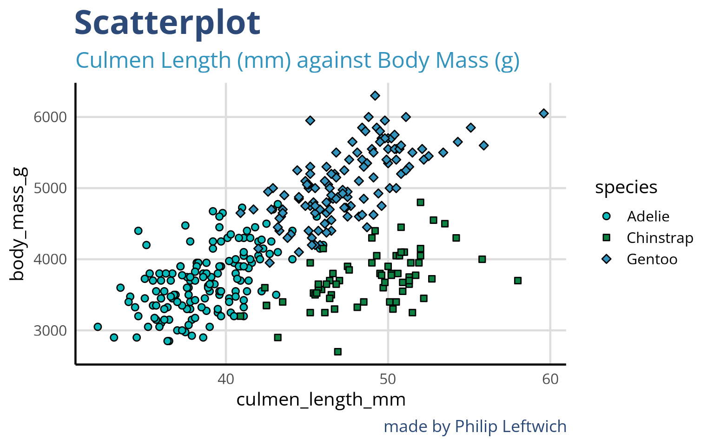
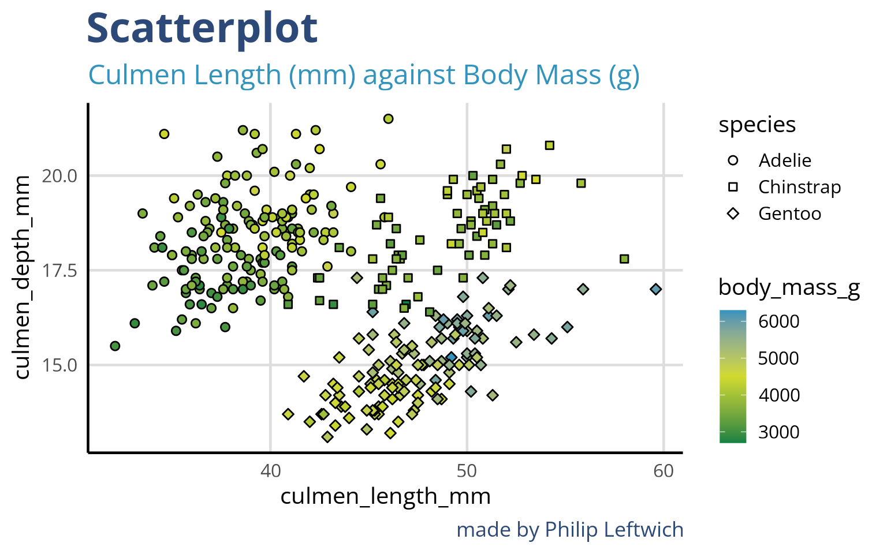
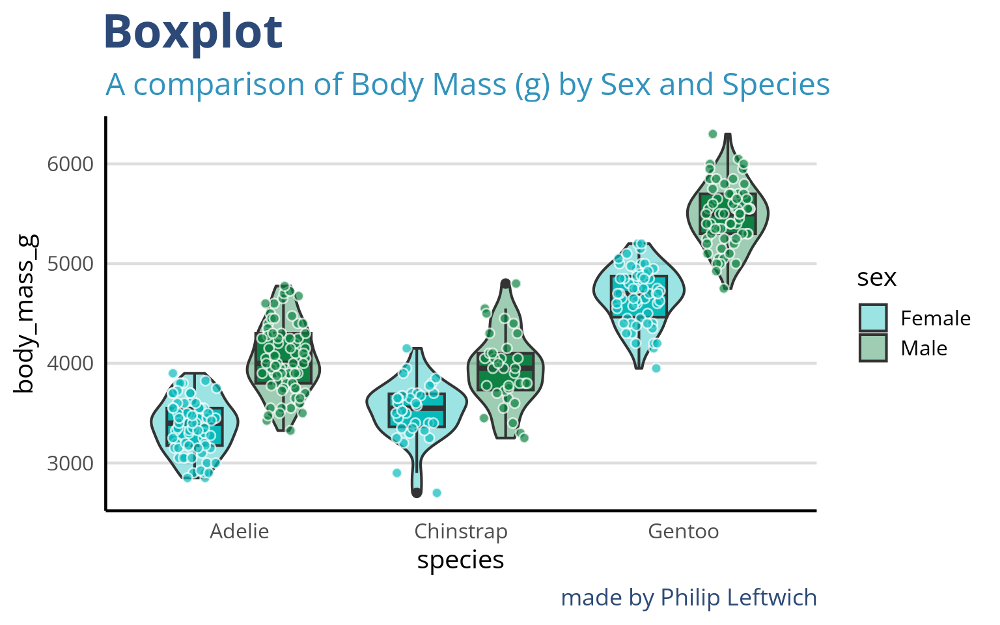

brand_colours <- c(
"teal" = "#09baba", # bright teal
"green" = "#0d8242", # dark green
"lime" = "#0ee565", # vivid lime
"navy" = "#2c4977", # deep navy
"blue" = "#3293BD", # bright blue
"yellow" = "#d2db2e" # lime-yellow accent
)
brand_palettes <- list(
brand_colours = brand_colours,
discrete = c("#09baba", "#0d8242", "#3293BD", "#d2db2e", "#2c4977"),
continuous_light = c("#2c4977","#09baba", "#d2db2e" ),
continuous_cool = c("#09baba", "#3293BD", "#2c4977"),
diverging = c("#0d8242", "#d2db2e", "#3293BD")
)
show_brand_palettes <- function(palettes = brand_palettes) {
df <- purrr::imap_dfr(palettes, ~{
tibble(
palette = .y,
color = .x,
order = seq_along(.x)
)
})
ggplot(df, aes(x = order, y = palette, fill = color)) +
geom_tile(color = "white", linewidth = 0.8) +
geom_text(aes(label = color), color = "black", size = 3, vjust = 2) +
scale_fill_identity() +
theme_minimal(base_size = 12) +
theme(
axis.title = element_blank(),
axis.ticks = element_blank(),
panel.grid = element_blank(),
axis.text.x = element_blank(),
axis.text.y = element_text(face = "bold")
)
}16 Themes
16.1 Learning Objectives
Using consistent themes: https://www.cararthompson.com/talks/nhsr2022-ggplot-themes/
Font size
Captions and context
5027A Accessible colours and hierarchy & redundancy
Data-to-ink ratios: https://jtr13.github.io/cc19/tuftes-principles-of-data-ink.html https://rpubs.com/Konstantin_Xo/Visualization#:~:text=Data%2Dto%2Dink%20ratio%20is,conveying%20the%20important%20data%20effectively. https://cct-datascience.quarto.pub/crafting-publication-quality-data-visualizations-with-ggplot2/
5023B visual cues
# ---- Theme Function ----
theme_ox <- function(base_size = 30,
base_family = "Open Sans",
base_line_size = 0.8,
base_rect_size = 0.5,
axis_type = c("categorical", "continuous"),
palette = c("discrete", "continuous_light", "continuous_cool", "diverging"),
midpoint = 0,
accessible = FALSE) {
palette <- match.arg(palette)
axis_type <- match.arg(axis_type)
# Load and activate font via showtext
if (requireNamespace("showtext", quietly = TRUE)) {
showtext::showtext_auto(enable = TRUE)
# Add Google font if not already registered
if (!("Open Sans" %in% sysfonts::font_families())) {
try(sysfonts::font_add_google("Open Sans", "Open Sans"), silent = TRUE)
}
}
# Accessibility-safe fallback
if (accessible) {
brand_palettes$discrete <- viridisLite::viridis(5, option = "D")
brand_palettes$continuous_light <- viridisLite::viridis(256)
brand_palettes$continuous_cool <- viridisLite::mako(256)
brand_palettes$diverging <- c("#440154", "#FFFFFF", "#FDE725")
}
half_line <- base_size / 2L
# ---- Core Theme ----
base <- ggplot2::theme(
line = ggplot2::element_line(colour = "#000000", linewidth = base_line_size),
rect = ggplot2::element_rect(fill = "#FFFFFF", colour = "#000000", linewidth = base_rect_size),
text = ggplot2::element_text(family = base_family, colour = "#000000", size = base_size),
plot.title = ggplot2::element_text(face = "bold", hjust = 0, size = base_size * 1.8,
colour = brand_colours["navy"]),
plot.subtitle = ggplot2::element_text(hjust = 0, size = base_size * 1.2,
colour = brand_colours["blue"]),
plot.caption = ggplot2::element_text(hjust = 1, size = base_size * 0.9,
colour = brand_colours["navy"]),
axis.title = ggplot2::element_text(size = base_size),
panel.background = ggplot2::element_rect(fill = "white", colour = NA),
strip.background = ggplot2::element_rect(fill = brand_colours["teal"], colour = NA),
strip.text = ggplot2::element_text(face = "bold", colour = "white",
size = base_size * 1.1),
panel.border = ggplot2::element_blank(),
axis.line = ggplot2::element_line(linewidth = base_line_size, colour = "black"),
axis.line.x = ggplot2::element_line(linewidth = base_line_size, linetype = "solid", colour = "black"),
axis.line.y = ggplot2::element_line(linewidth = base_line_size, linetype = "solid", colour = "black")
)
# Axis-specific theme
if (axis_type == "continuous") {
axis_theme <- ggplot2::theme(
panel.grid.major.y = ggplot2::element_line(colour = "#dedddd"),
panel.grid.major.x = ggplot2::element_line(colour = "#dedddd"),
legend.position = "right"
)
} else {
axis_theme <- ggplot2::theme(
panel.grid.major.y = ggplot2::element_line(colour = "#dedddd"),
legend.position = "right"
)
}
t <- list(base, axis_theme)
# ---- Add Colour Scales ----
s <- switch(palette,
discrete = list(
ggplot2::scale_color_manual(values = brand_palettes$discrete),
ggplot2::scale_fill_manual(values = brand_palettes$discrete)
),
continuous_light = list(
ggplot2::scale_color_gradientn(colours = brand_palettes$continuous_light),
ggplot2::scale_fill_gradientn(colours = brand_palettes$continuous_light)
),
continuous_cool = list(
ggplot2::scale_color_gradientn(colours = brand_palettes$continuous_cool),
ggplot2::scale_fill_gradientn(colours = brand_palettes$continuous_cool)
),
diverging = list(
ggplot2::scale_color_gradient2(
low = brand_palettes$diverging[1],
mid = brand_palettes$diverging[2],
high = brand_palettes$diverging[3],
midpoint = midpoint
),
ggplot2::scale_fill_gradient2(
low = brand_palettes$diverging[1],
mid = brand_palettes$diverging[2],
high = brand_palettes$diverging[3],
midpoint = midpoint
)
)
)
c(list(t), s)
}ggplot(penguins,
aes(x = culmen_length_mm,
y = body_mass_g,
fill = species,
shape = species))+
geom_point()+
labs(title= "Scatterplot",
subtitle = "Culmen Length (mm) against Body Mass (g)",
caption = "made by Philip Leftwich") +
theme_ox(axis_type = "continuous") +
scale_shape_manual (values = c(21,22,23))
ggplot(penguins,
aes(x = culmen_length_mm,
y = culmen_depth_mm,
fill = body_mass_g,
shape = species))+
geom_point()+
labs(title= "Scatterplot",
subtitle = "Culmen Length (mm) against Body Mass (g)",
caption = "made by Philip Leftwich") +
theme_ox(axis_type = "continuous",
palette = "diverging", midpoint = 4500) +
scale_shape_manual (values = c(21,22,23))
dodge <- 0.8
penguins |>
drop_na(sex) |>
ggplot( aes(x = species,
y = body_mass_g,
fill = sex))+
geom_violin(position = position_dodge(width = dodge), alpha = .4)+
geom_boxplot(position = position_dodge(width = dodge), width = .5, outlier.shape = NULL, show.legend = "FALSE")+
geom_point(position = position_jitterdodge(jitter.width = .4, dodge.width = dodge),
shape = 21,
colour = "white", show.legend = FALSE, alpha = .7)+
labs(title= "Boxplot",
subtitle = "A comparison of Body Mass (g) by Sex and Species",
caption = "made by Philip Leftwich") +
theme_ox(axis_type = "categorical")